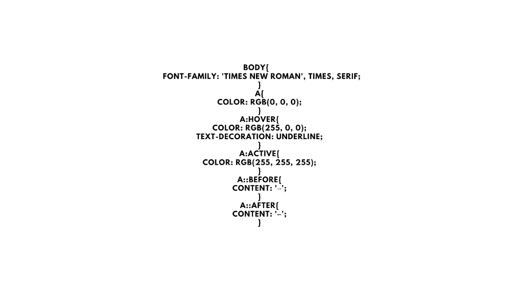

VEM PRA MAIS UMA AULA COM "SPIDERMAN" KKK
BOM VAMOS COMEÇA MAIS AULA MUITO LEGAL QUE CADA DIA ESTAMOS APRENDENDO MAIS COISAS E INCLUSIVE MAIS COISAS NOVAS E TAMBEM TAGS E CODIGOA NOVOS KK E CADA DIA QUE ESTAMOS NOS APROFUDANDO E APRENDENDO MAIS TA ANTES DE COMEÇA A NOSSA AULA SE VC NAO VIU A NOSSA AULA ANTERIOR ESTOU SEMPRE FALANDO ISSO ATE PORQUE NAO ADIANTA VC VER ESSE VIDEO E NAO VER O VIDEO ANTERIOR ATE PORQUE VC NAO VER VC PODE PERDE MAIS COISAS E INCLUSIVE TRABALHAMOS COM TAGS NOVAS SE VC QUISER VER ESSE VIDEO E SO PESQUISA NO YOUTUBE "PSEUDO-CLASSES EM CSS" E VEJA EL TODO MAIS BOM HOJE NOS IREMOS APRENDER PSEUDO TAMBEM SO QUE "ELEMENTOS" ENTAO VAMOS LA LEST GOOOOO!
BOM vamos la pra mais uma AULA bom vamos começa co =m "PESONALIZAÇAO DE LINKS mais primeiro vc tem que cria o seu link pra vc poder criar o seu LINK ja vimos tambem inclusive se tiver alguem que NAO saber CRIAR links e so vc ver esse video que ele mostra como vc cria links bom depois que vc criou o seu LINK vc pode comomeu ja falei vc pode PESOLANIZAR o seu LINK mudando cores eu irei mostra como vc pode fazer isso como sempra vc ira ciar o seu "STYLE" e dentro do style vc coloca assim oh "body" mais calma eu irei mostra como vc deve colocar eu irei colocar uma IMAGEM mostrando como vc deve coloacar pra funcionar no seu SITE mais bom colocar asim oh: "style{body font-family: Arial, Helvetica, sans-serif;}" "a{color red;}" pronto e isso e outra se vc quiser TIRA os sublinhado debaixo dos LINS e so vc usando a tag "text-decoration: nome;" desse mesmo jeito bom se vc quiser tambem vc pode coloca pra quando passa o MOUSE em cime pode fica SUBLINHADO e quando passa em cima fica PRETO ou BLACK kk assim oh mais ai vc ira usar a TAG "hover" ficaria assim oh: "a:hover{color black; text-decoration: underline;} desse mesmo jeito tem outra TAG tambem que a TAG que quando vc CLICA ele pode fica na cor que vc escolheu e so usando a TAG "a:active{color red;}" desse jeito ai oh agora entre no seu SITE pra ver ver quando vc CLICA e ver a MAGICA acontecer bom tem duas TAGS que vc pode induca que e um LINK e usando esses aqui oh: "a::before{contant: '⟹'} e o outro e "a::after{contant: '⟸'} usando eles vai ter duaa SETAS indicando um LINK fica ate legal pra vc saber qualquer que um veja so: "# = id" ". = class" ": = pseudo-classe" ":: = pseudo-elemento" "> = clildren" so pra vc "DECORAR" e lambra cada um deles agora irei colocar uma imagem do CODIGO pra vc se quiser colocar no seu SITE.

BOM ESTA AI OS CODIOS QUE SE VC QUISER PEGA E SO PEGA E SE DIVIRTA! ah sim LEMBRANDO SE VC QUISER ESSAS SETAS e so entra so GOOGLE e pesquise por "erikasarti.com" e la onde esta essas SETAS que eu peguei.
CRIANDO LINKS! PARA A PESONALIZAÇAO
BOM FOI ISSO E ATE PROXIMA AULA!